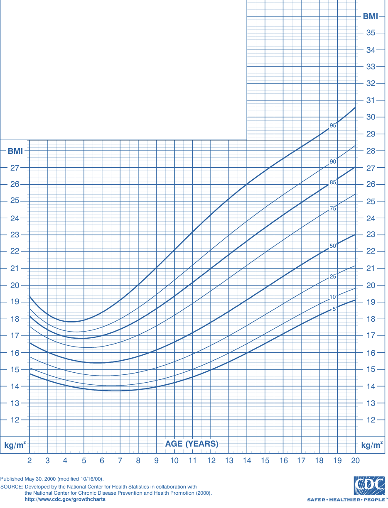
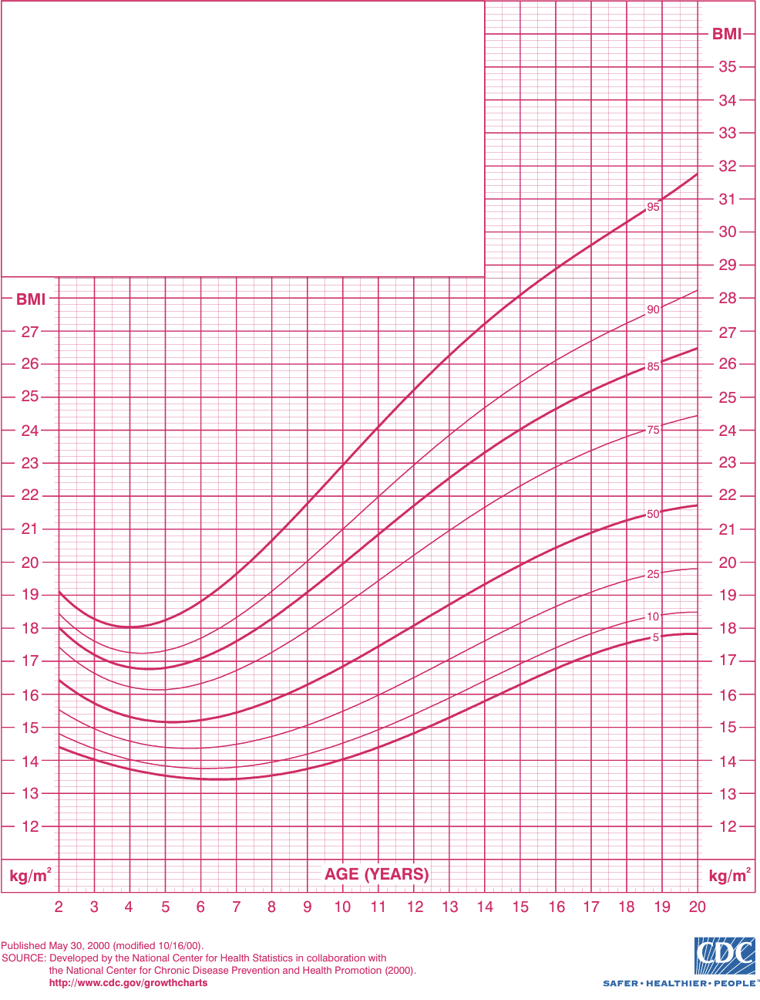

Herramienta clínica para la evaluación nutricional de niños y adolescentes
Interpreta el resultado según curvas de crecimiento oficiales (CDC / OMS).
El Índice de Masa Corporal (IMC) es una fórmula matemática que relaciona el peso y la estatura. Se calcula dividiendo el peso (en kilogramos) entre el cuadrado de la estatura (en metros):
IMC = Peso (kg) ÷ [Talla (m)]²
En población pediátrica, el IMC por sí solo no es suficiente. Debe compararse con referencias de edad y sexo, utilizando percentilas o puntuación Z. Estas curvas reflejan la distribución normal de una población saludable.
Estas interpretaciones se basan en tablas CDC (niños >2 años) o WHO (niños menores de 5 años).
Una percentila indica la posición del niño respecto a una población de referencia. Por ejemplo, un IMC en el percentil 75 significa que el 75% de los niños de su misma edad y sexo tienen un IMC igual o menor.
La puntuación Z o z-score expresa cuántas desviaciones estándar se encuentra el valor respecto a la media. Es útil en investigación y en condiciones extremas (desnutrición severa, obesidad mórbida).
El IMC debe ser parte de una valoración nutricional integral, que incluya historia clínica, antecedentes prenatales y familiares, examen físico, evolución longitudinal y análisis dietético. No se debe usar de forma aislada para etiquetar patologías.
Sí. Existen curvas adaptadas para patologías específicas como síndrome de Down, parálisis cerebral o prematuros extremos. Estas deben usarse bajo supervisión de pediatra especializado.
El IMC es una herramienta práctica y accesible para monitorear el crecimiento, pero requiere interpretación experta. Asegúrate de usar tablas adecuadas y correlacionarlo con datos clínicos.
Las siguientes gráficas permiten comparar el IMC con los percentiles estándar. Busca la edad del paciente en el eje horizontal y ubica su IMC en el eje vertical. Identifica en qué curva (percentil) se encuentra el punto para clasificarlo correctamente.
Niños (CDC 2-19 años)
Niñas (CDC 2-19 años)
Fuente: CDC. Clinical Growth Charts. 2000.
1️⃣ Localiza la edad del niño (en meses o años) en el eje horizontal.
2️⃣ Marca el valor de su IMC en el eje vertical.
3️⃣ Traza una línea para encontrar el punto de intersección.
4️⃣ Observa en qué curva se encuentra: si está en el percentil 85, indica riesgo de sobrepeso; si está sobre el 95, es indicativo de obesidad.
5️⃣ Realiza un seguimiento longitudinal: múltiples puntos a lo largo del tiempo brindan más información que un solo valor.